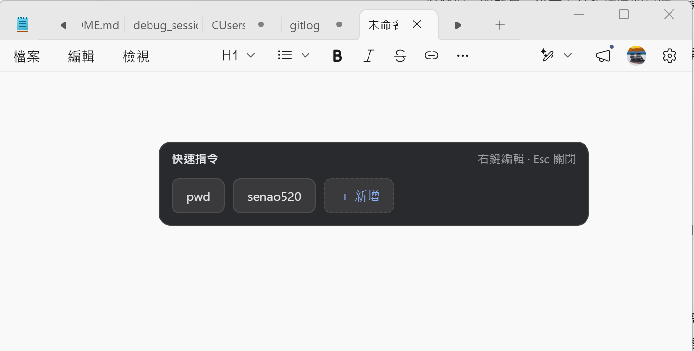
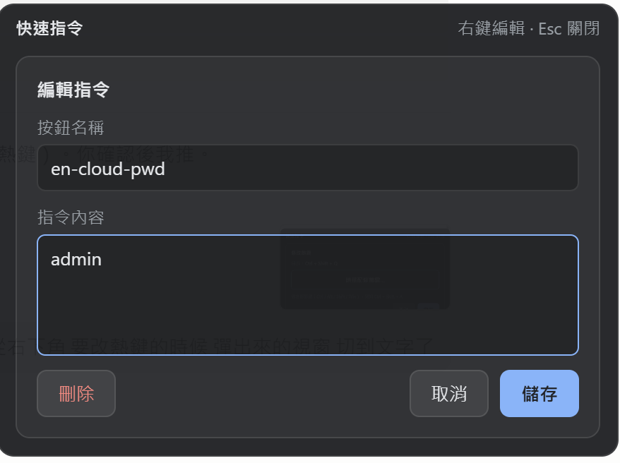
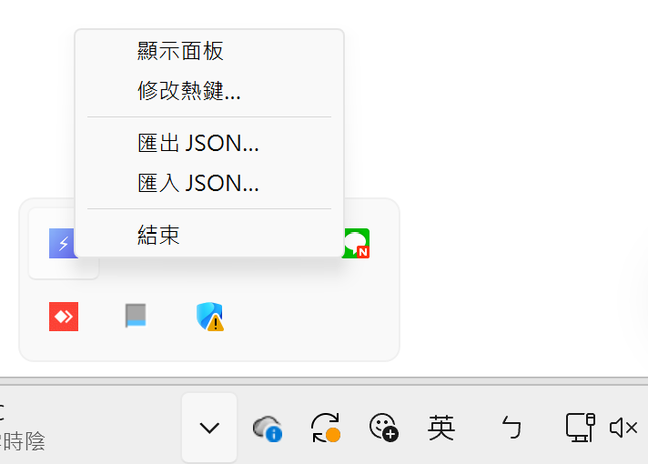

為「少打字、不離手」而生
任何程式中按下熱鍵（預設 Ctrl + Shift + A）即可叫出面板，可自訂組合鍵。
面板在游標附近出現，操作距離最短；多螢幕自動夾回畫面內，不超出邊界。
暫存你原本的剪貼簿 → 寫入指令 → 模擬貼上 → 還原，貼完不弄亂剪貼簿。
點「＋ 新增」建立、右鍵按鈕即可編輯或刪除，設定即時儲存。
指令清單可匯出備份、分享給同事，或在多台電腦間同步。
Tauri 打造，安裝檔約 1–2 MB、記憶體約 15–30 MB，背景常駐無感。
不會重複開啟；開機自啟動，登入即就緒。
Windows / macOS / Linux 同一套體驗，由 CI 自動打包各平台安裝檔。
乾淨的深色懸浮介面，不打擾你的工作流
按下熱鍵，面板在游標旁彈出。點按鈕即把文字貼到原本游標處；面板依按鈕數量自動調整大小，失焦或按
Esc 自動隱藏。

在按鈕上按右鍵即可編輯，或點「＋ 新增」建立。設定按鈕名稱與要貼上的內容，可隨時刪除。

常駐於系統匣 ⚡ 圖示，內含顯示面板、修改熱鍵、匯出 / 匯入 JSON、結束。

三步驟開始用
安裝後自動於背景執行（並設開機自啟動），系統匣出現 ⚡ 圖示。
按 Ctrl + Shift + A 叫出面板，點「＋ 新增」設定按鈕名稱與內容。
把游標放到輸入處，按熱鍵叫出面板，點按鈕即把文字貼到游標位置。